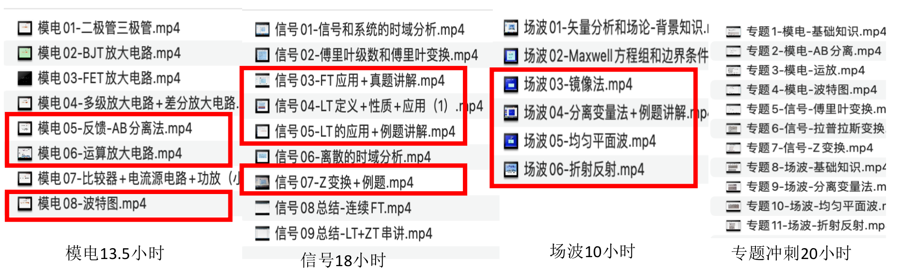

帮助你快速学习考研专业课，轻松上岸！
你好！我是如行学长，本科毕业于南理工（211）通信工程，20年考生，考研总分378，专业课分数120，在当年考生中排名前30（总人数400+）。目前已毕业。
2020年-2024年辅导921专业课5年，累计辅导80+学弟学妹，一对一辅导总时长超过821小时，经验丰富，零投诉。
与 新东方、启德、海文 等多家知名考研机构合作过，提供高水平的921专业课辅导。
根据多年讲课经验，针对北航921精心制作专业课视频，包含 基础知识学习班 和 专业课冲刺提高班。
全部资料免费分享，每年的新情况、新变化随时更新视频。
课程目录和时长：【零基础基础班：前三列】【冲刺提高班：最后一列】
主讲人讲课水平高：初试分数高；讲课经验足；学生反馈好；初试专业课分数高
服务到位：个性化学习计划，全程跟进进度，主讲人免费答疑
课程设置合理：时长适中，不浪费大家时间；课程明确划分章节；完全针对考试重点
全程班：3225元（每小时50元），总共64.5小时课程，含三科基础班+冲刺提高班+全程答疑+全部资料
单科购买：满足大家灵活复习的需求，单科购买价格为每小时60元*单科时长，即模电810；信号1080；场波600；真题专题1200
如果你对课程有兴趣，可以通过以下方式与我联系：